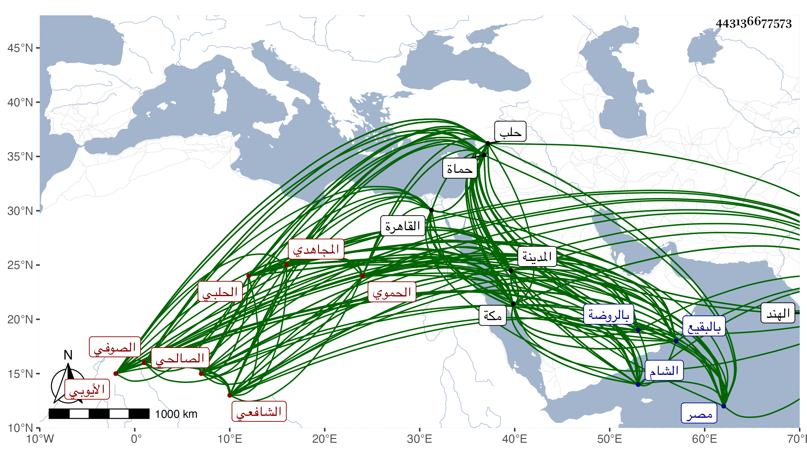

0902Sakhawi.DawLamic.ITO20230111-ara1.EIS1600.443136677573
Biography ID: 443136677573
358
محمد بن محمد بن علي بن أحمد بن أبي بكر بن اسماعيل بن أحمد بن علي ابن ابراهيم الشمس المجاهدي الأيوبي لكونه من ذرية الصلاح يوسف بن أيوب وربما كتب الصالحي الأيوبي الحموي ثم الحلبي الشافعي الصوفي ويعرف بابن الشماع . ولد في مستهل سنة إحدي وتسعين وسبعمائة بحماة وانتقل منها وهو صغير مع أبيه لمصر فأقام بها وحفظ القرآن والتنبيه والربع الأول من المهذب للنووي وحضر دروس السراج البلقيني وتفقه بالبيجوري والولي العراقي وأخذ منطق المختصر وغيره عن العز بن جماعة ولازم البساطي في كثير من الفنون ولقي بحماة الجمال بن خطيب المنصورية فأخذ عنه أيضا الفقه وكذا الأصول والعربية وأخذهما أيضا عن العلاء بن المغلي وصحب البرهان السلماسي الشهير بابن البقال بالقاهرة وأخذ عنه طريق القوم وذلك في رمضان سنة ثلاث وثمانمائة وقال انه أخذ بتبريز في سنة ثلاث وأربعين وسبعمائة عن الجمال عبد الله العجمي شيخ الشهاب بن الناصح الذي قيل انه عمر مائة سنة وخمسا وثمانين سنة ... وأن أول شيء دخل جوفه ريق الشيخ عبد القادر الكيلاني حيث حنكه وألبسه لما أتت به أمه اليه وذلك بعيد عن الصحة وكذا صحب صاحب الترجمة الزين الخافي وغيره من شيوخ الوقت واجتمع بالعلاء البخاري والتقي الحصني يسيرا ولبس الخرقة وتلقن الذكر من سعد الدين الصوفي بلباسه لها من طريق ابن العربي وسمع الحديث فيما ذكر على الولي العراقي والعز بن جماعة وابن خلدون واستوطن حلب من سنة ثلاثين متصديا لتربية المريدين وارشاد القاصدين حتى أخذ عنه جماعة وصارت له فيها وجاهة وجلالة ورسائل مقبولة وقد لقيته بها فكتبت عنه من نظمه قوله :
| صرفت عن الكثرات وجه توجهي | إلى وحدة الوجه الكريم الممجد |
| فما خاب مصروف إلى الحق وجهه | وقد خاب من أضحى من الخلق يجتدي |
وقوله :
| لو كنت أعلم أن وصلك ممكن | بتلاف روحي أو ذهاب وجودي |
| لمحوت سطري من صحيفة عالمي | وهجرت كوني في وصال شهودي |
وكذا أخذ عنه التاج بن زهرة وأنشدني عنه قوله في الوظائف السبعة التي ذكرها الغزالي ولم يخلها من كتبه الكلامية والصوفية :
| تقديس إيمان وعجز فافهم | واسكت مكفا ثم أمسك سلم |
وكان إماما علامة فصيحا طلق اللسان رائق النظم والنثر بديع الذكاء حسن الأخلاق والمعاشرة والشكالة والبزة ممتع المحاضرة سريع الجواب مجيدا لما يتكلم فيه مثريا ذا مال طائل منعزلا عن الناس ببيته الذي أنشأه بحلب وهو من محاسن بيوتها متعففا عن وظائف الفقهاء وما أشبهها مستغنيا بأصناف المتاجر ذا يد طولى في علم الكلام والفلك والحرف والتصوف ولكنه ينسب إلى مقالة ابن العربي ولذا كان البلاطنسي يقع فيه ورأيت بخطه ما يدل على التبري من ذلك هذا مع أنه أورد سنده بلباس الخرقة في إجازة كتبها للسيد العلاء بن عفيف الدين من طريقه وقال ما نصه ومولانا الشيخ محي الدين المشار إليه لبسها مرارا بحيث روينا عنه أنه لبس الخرقة وتلقن الذكر وتأدب بنحو من سبعمائة شيخ من مشايخ الطريقة وأئمة الحقيقة وساق طرفا من ذلك فالله أعلم بحقيقة أمره ، وقد حج غير مرة وجاور بمكة بعد الثلاثين ودخل الهند وساح ورابط ببعض الثغور وقتا وشرح قطعة من الحاوي الصغير ومن الإرشاد للقاضي أبي بكر الباقلاني في الأصول وأعرب جميع ألفية ابن ملك لأجل ولده أبي الطاهر وشرح البرهانية في أصول الدين وعمل كتابا في مصطلح الصوفية سماه منشأ الأغاليط وأفرد رحلته في مجلد وعقيدته بالتأليف وتبرا فيها من كل ما يخالف السنة والجماعة ولم يزل على جلالته إلى أن وقع بحلب فناء عظيم توفي فيه غالب من عنده من ولد وأهل وخدم فأسف وتوجه إلى مكة عازما على المجاورة بها صحبة الركب الحلبي ولقيه ابن السيد عفيف الدين بالشام وهو متوعك فقال له قد كنت عزمت على المجاورة بمكة والآن وقع في خاطري مزيد الرغبة في المجاورة بالمدينة النبوية فكان كذلك فإنه استمر في توعكه إلى يوم دخوله لها وذلك في يوم الثلاثاء العشرين من ذي القعدة سنة ثلاث وستين فمات ودفن بالبقيع بعد أن صلى عليه بالروضة النبوية رحمه الله وعفا عنه ورثاه زوج ابنة الفاضل جلال الدين بن النصيبي بقصيدة مطلعها :
| أخفاك يا شمس العلوم كسوف | من بعد فقدك ناظري مكفوف |
